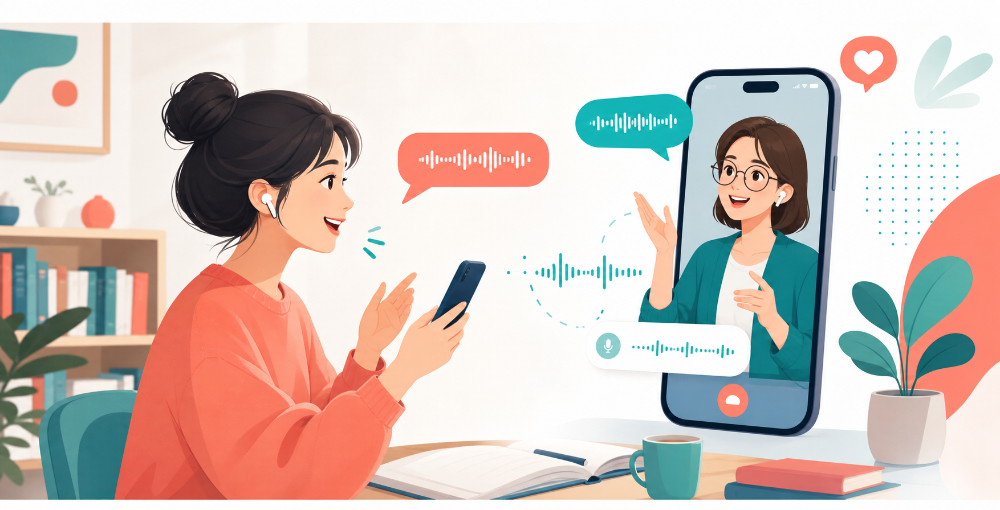

你好，很高兴认识你。
Hi, nice to meet you.
把 nice to 连起来读，像 “nice-tə”。
Start with sounds
这里按美式口语常见音位整理：元音、双元音、r 化元音、辅音、重音和连读。 每个音都标出常见拼写提示，例如 /u/ 常见于 oo、ue、u_e。不同词典符号可能略有差异，练习时以声音为准。 这不是 IPA 的全世界符号表，而是零基础学美式英语口语需要先掌握的完整入门表。
常见拼写：ee, ea, e
嘴角微微向两边，声音清楚稳定。
Speaking first
课程按“听力输入、模仿跟读、录音对比、真实场景、每日复盘”设计。 你不用一开始就学复杂语法，先把生活中高频句说顺。

短音频反复听，注意连读、重音、语调。
像影子一样跟读，不急着翻译每个词。
说完听自己，和原句对比，改一个点。
每天把一句话换成自己的真实信息。
Online videos
这些资源适合联网时看。路上没网时，仍然可以使用本 App 里的音标、口型图、30 天课程和录音练习。
手机安装离线 App 不能直接从 file:// 完成，需要用 HTTPS、localhost 或同一 Wi-Fi 下的本地地址打开一次。
iPhone 用 Safari 的“分享 → 添加到主屏幕”；Android 用 Chrome 的“安装应用”或“添加到主屏幕”。
音标、口型图、30 天课程会缓存到手机。YouTube 视频仍需要联网。
Day 1
能自然说出第一句问候，并完成一次自我录音。
你好，很高兴认识你。
Hi, nice to meet you.
把 nice to 连起来读，像 “nice-tə”。
录音后会显示识别结果和改进建议。
哪一个词最难说？明天先练它。